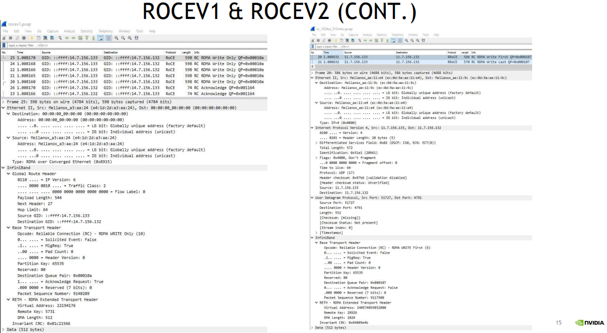
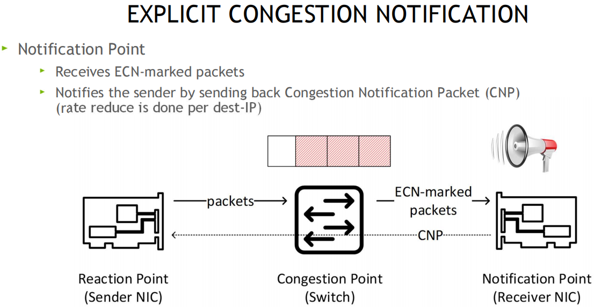

Nvidia_Mellanox_CX5和6DX系列网卡_RDMA_RoCE_无损和有损_DCQCN拥塞控制等技术简介
Nvidia_Mellanox_CX5和6DX系列网卡_RDMA_RoCE_无损和有损_DCQCN拥塞控制等技术简介-一文入门RDMA和RoCE有损无损
简介
随着互联网, 人工智能等兴起, 跨机通信对带宽和时延都提出了更高的要求, RDMA技术也不断迭代演进, 如: RoCE(RDMA融合以太网)协议, 从RoCEv1 -> RoCEv2, 以及IB协议, Mellanox的RDMA网卡cx4, cx5, cx6/cx6DX, cx7等, 本文主要基于CX5和CX6DX对RoCE技术进行简介, 一文入门RDMA和RoCE有损及无损关键技术
术语
RoCE: RDMA融合以太网, 继承RDMA所有的优势
WQE: 工作队列元素, 可发音(wuki)
CQE: 完成队列元素, 可发音(cookie)
RDMA Atomic: 原子操作, 主要用于分布式锁, Redis缓存等场景
DCQCN: 数据中心量化拥塞通知
ZTR(Zero Touch RoCE)
PCP(Priority Code Point): 优先级代码点用于对网络流量进行分类和管理，并在第 2 层以太网中提供 QoS。 它使用 VLAN 标头中的 3 位 PCP 字段对数据包进行分类。 差分服务或 DiffServ 使用 IP 标头中 8 位 DS 字段中的 6 位 DSCP 进行数据包分类
ECN: 显式拥塞通知 (Explicit Congestion Notification) 是互联网协议和传输控制协议的扩展，在 RFC 3168 (2001) 中定义。 ECN 允许在不丢失数据包的情况下进行网络拥塞的端到端通知。 ECN 是一项可选功能，当底层网络基础设施也支持时，可以在两个启用 ECN 的端点之间使用
DSCP(differentiated services code point): 差分服务代码点, 差分服务或 DiffServ 是一种计算机网络体系结构，它指定了一种在现代 IP 网络上分类和管理网络流量并提供服务质量 (QoS) 的机制。 例如，DiffServ 可用于为语音或流媒体等关键网络流量提供低延迟，同时为 Web 流量或文件传输等非关键服务提供尽力而为的服务。DiffServ 在 IP 标头的 8 位差分服务字段（DS 字段）中使用 6 位差分服务代码点 (DSCP)，用于数据包分类。 DS 字段取代了过时的 IPv4 TOS 字段
Cos: class of service 服务分类
CX-6 DX: Datacenter系列
OOS: out of sequence, 出现乱序
PSN: package sequence num, 包序号, 一个包按MTU拆分成多个包, 每个包有个序号PSN
前置知识
GoBackN机制
RDMA基本概念
RDMA如何工作
发送端CPU准备好发送数据后会敲一次门铃, 而接收方收到网卡数据后不会通知CPU(降低开销)
IBA通信技术栈
RDMA常见操作
RoCE与RoCEv2对比

- RoCEv2没有RoCE的GRH(全局路由头)
- L2二层以太头中可能包含了802.1Q标签(PCP或VLAN_ID)
- RoCEv2的IP头可能包含ECN标记, 和DSCP
- IP协议端口号表明该包是UDP报文
- UDP目的端口4791(保留端口)表明, 下一个头是IB的BTH(BasicTranspotHeader 基本传输头占用12字节)
- 可通过抓包对比两者差异(注意IPv6与IPv4的差异), 如下图所示:

如何让RoCE工作的更好
配置流控(L2 PCP / L3 DSCP)
Sender发送方 -> Receiver接收方
流控为链路层协议, 在接收方的RX Buffer接收缓存区设置高和低水位, 接收方Buffer填满时, 发送暂停帧Pause给发送方, 发送方XOFF, 并暂停发包, 等接收方释放出接收Buffer后, 给发送方发送一个UN-Pause帧, 发送方XON, 重新开始发送, 该方案不会跨越交换机

多流问题: 暂停帧不区分流, 会影响其他流
解决: 无损方案, PFC优先级流控, 用8个优先级(0-7), 独立控制每个流分类服务CoS, 网卡可将Buffer切分, 比如一半启动无损, 一半保持有损
802.3x PAUSE帧和PFC帧格式参考
主机侧: 可通过ethtool, mlnx_qos工具查看和配置PFC流控, 交换机侧也需要做对应的配置, 如果是跨机房,也需要保持类似的配置(无损痛点之一, 有时候交换机不在咱们得控制范围, 所以这种规模的网络, 限制了无损的配置)
拥塞管理/算法(DCQCN, ZTR_RTTCC,自定义PCC算法)
拥塞问题:
ReactionPoint 响应端(发送方网卡) ————— Congestion Point 拥塞点交换机 ——————– NotificationPoint 通知发起方(接收方网卡)
原理: 当交换机检测到拥塞时, 将出口包打上ECN标记, 接收端收到ECN包后, 因为有发送端的QP信息, 发送拥塞通知包CNP给发送端, 这时候假如发送端收到多个接收端发来的ECN包, 发送方需要有一个分布式拥塞控制算法(DCQCN, 由Mellanox和微软共同开发), 来降速和调度发送, 一段时间发端没有收到CNP时, 这个时候需要恢复流量, 目前是按照三个阶段来恢复, 快速恢复FR(fast recovery) -> 二分递增AI(additive increase) -> 更快增加HAI(hyper increase)

在cx6 DX网卡上可自定义拥塞控制算法, 比如阿里和google都有自己的拥塞管理算法, 算法参考:
CNP帧格式:

配置流控:
QoS保证质量
主要是二层的PCP和三层的DSCP, 进行流分类, 保证服务质量
网卡接收缓冲区的细粒度控制
将RX Buffer切片, 比如8片, 进行更细粒度的优先级队列控制
其他
一键配置: 可通过脚本检测和配置, 用于管理 RoCE 部署的系统高性能网络接口配置的命令行实用程序, 参考: https://github.com/NVIDIA/doroce-linux
无损缺点
配置复杂
拥塞严重时会带来暂停发送的问题
- 延迟增加
- 暂停帧风暴PauseStorm
- 配置复杂, 每个Fabric节点需要保持一致的无损配置
- 受限制, 比如大型网络, 或客户的网络中, 没有权限去配置无损
为了更好的推广和使用RoCE, 有损配置解决了部分无损的配置难题
有损RoCE(CONNECTX-5/6 DX系列网卡)
CX-5
慢重启
硬件丢包时, 发送方给自己发送一个CNP, CNP计数加1
接收方发送一个OOS_NACK(乱序包, 消极应答)和CNP, 发送方收到CNP后, 计数器再加1, 并降低速率
cx5默认启用该功能
慢启动
发生慢重启后, 其他QP启动后, 以受限速率发包, 直到拥塞解除
传输窗口
网络拥塞时, 原来的Go-BackN可能需要重传大量已经到达接收端但是被忽略的包
现在以一个窗口大小, 降低重传代价
自适应重传超时
发送方动态调整ACK_TIMEOUT(比如发送了3个PSN, 等接收方回复PSN3的ACK时间超时了)

CX-6 DX
选择性重传
发送方只需要重传丢失的包即可, 接收方相当于支持乱序重组
避免接收方广播
配置流程
RC和DC服务类型:
排查和调试
参考
Nvidia RoCE: https://docs.nvidia.com/networking/pages/viewpage.action?pageId=12013422
What is RDMA 什么是RDMA
https://enterprise-support.nvidia.com/s/article/What-is-RDMA
IB规范卷1: Supplement to InfiniBandTM Architecture Specification Volume 1 Release 1.2.1 - Annex 17: RoCEv2
https://cw.infinibandta.org/document/dl/7781
RDMA/RoCE Solutions 解决方案
https://enterprise-support.nvidia.com/s/article/rdma-roce-solutions
Understanding QoS Configuration for RoCE 理解QoS
https://enterprise-support.nvidia.com/s/article/understanding-qos-configuration-for-roce
mlnx_qos Manual
https://enterprise-support.nvidia.com/s/article/mlnx-qos
Understanding RoCEv2 Congestion Management 拥塞管理
https://enterprise-support.nvidia.com/s/article/understanding-rocev2-congestion-management
DCQCN Congestion Control Algorithm 流控算法
https://enterprise-support.nvidia.com/s/article/DCQCN-CC-algorithm
ECN/DCQCN parameters introduction
https://enterprise-support.nvidia.com/s/article/dcqcn-parameters
Enable/Disable Lossy RoCE Accelerations
https://enterprise-support.nvidia.com/s/article/How-to-Enable-Disable-Lossy-RoCE-Accelerations
Understanding MLX5 Ethtool Counters 理解计数器
https://enterprise-support.nvidia.com/s/article/understanding-mlx5-ethtool-counters
Understanding MLX5 Linux Counters and Status Parameters
Dump RDMA traffic with tcpdump 抓包
connectx-4-x
RoCE Debug Flow
https://enterprise-support.nvidia.com/s/article/RoCE-Debug-Flow-for-Linux
RDMA Sample Code 编程示例
[basic rdma pingpong] https://github.com/linux-rdma/rdma-core/tree/master/libibverbs/examples
[performance benchmarks] https://github.com/linux-rdma/perftest
[latency test] https://github.com/michaelbe2/rdma_samples/tree/master/rc_write_latency
[incast flow control] https://github.com/michaelbe2/rdma_fc
晓兵
博客: https://logread.cn | https://blog.csdn.net/ssbandjl | https://cloud.tencent.com/developer/user/5060293/articles
weixin: ssbandjl
公众号: 云原生云

- 原文作者：晓兵
- 原文链接：https://logread.cn/post/rdma/rdma_rocev2_lossless_lossy/
- 版权声明：本作品采用知识共享署名-非商业性使用-禁止演绎 4.0 国际许可协议进行许可，非商业转载请注明出处（作者，原文链接），商业转载请联系作者获得授权。